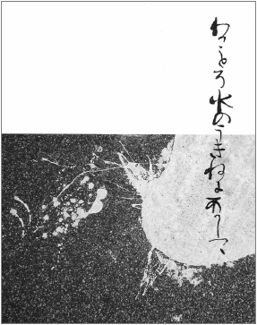

Gary LeBel
Cumming, Georgia, USA
Waterfalling
I have tried and failed to explain how Ki no Tsurayuki’s cursive leaps off the page and winds its tendrils so tightly round me like a vine:
it’s an easy thing to say: oh, but it’s the elegance, the beauty, the animus, the fluidity! But would such hollow descriptions do justice to a first kiss or the taste of an orange plucked ripe from the branch in another country, or to a sensibility that communes with the spirits of waterfalls?
Even in the smallest facsimile
his handwriting speaks volumes: the gods climb down to earth
on it.
And perhaps such things are not meant to be described at all
but only to flow in and through one’s being like the echoes of an old beloved song among the heart’s alluvial siftings,
that after a thousand years it is enough to be merely brushed by the sleeves of the ageless while its fingers reach in and touch your true inheritance,
the idea that survives you.
Where the sidestreet ends
the bluest eye will open
after a long and dreamy night;
O to live this bright new day
on the tip of time’s arrow . . .
Image: Corona with a line in the hand of Ki no Tsurayuki (2011)
|